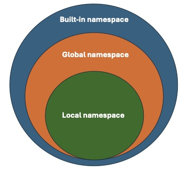

# Define function say_hello()
def say_hello():
print("Hello, how are you?")
say_hello()Python Fundamentals - Day 2
Functions
If we write snippets of code that we want to reuse in the future, it can be helpful to use functions. Functions are typically defined once and serve to group related functionality. They can be called (used) multiple times throughout your code. Additionally, functions have their own local variables, which are separate from the rest of the program.
To define a function, we use def.
Let’s take the example of last week and put it into a function.
Previously, we checked whether a participant is older than 65 or younger than 18 and added them to groups accordingly. We can do that now as well.
# We define a function that takes an age of a participant and sorts it into the corresponding group
age = 51
seniors = []
juniors = []
adults = []
def check_age(participant_age):
if participant_age > 65:
seniors.append(participant_age)
print(f"Senior: {participant_age}")
elif participant_age < 18:
juniors.append(participant_age)
print(f"Junior: {participant_age}")
else:
adults.append(participant_age)
print(f"Adult: {participant_age}")
check_age(age)You may have seen that we added participant_age in the brackets behind the name of the function. participant_age is given as an argument to the function check_age().
To actually make our function check_age() usable, we might want to combine it with a loop. Let’s try that!
participants = {"p1": 11, "p2": 25, "p3": 43, "p4": 55, "p5": 66}
seniors = []
juniors = []
adults = []
def check_age(participant_age):
if participant_age > 65:
seniors.append(participant_age)
print(f"Senior: {participant_age}")
elif participant_age < 18:
juniors.append(participant_age)
print(f"Junior: {participant_age}")
else:
adults.append(participant_age)
print(f"Adult: {participant_age}")
# Here, we only need the values since we are not interested in the names yet
# for every participant in the values of the dictionary...
for age in participants.values():
# ...check their age
check_age(age)Let us also add the participant’s name to the function, so that we can add this to our print
participants = {"p1": 11, "p2": 25, "p3": 43, "p4": 55, "p5": 66}
seniors = []
juniors = []
adults = []
def check_age(participant_name, participant_age):
if participant_age > 65:
seniors.append(participant_age)
print (f"Senior: {participant_name} is {str(participant_age)} years old")
elif participant_age < 18:
juniors.append(participant_age)
print (f"Junior: {participant_name} is {str(participant_age)} years old")
else:
adults.append(participant_age)
print(f"Adult: {participant_name} is {str(participant_age)} years old")
# Since we want to use the name and the age (key and value), we can use items()
for name, age in participants.items():
check_age(name, age)You see that we can also give multiple arguments to a function. Here, the arguments are positional. Our function check_age() expects first participant_name and then its participant_age.
In this case, we will receive an error message if we change the order.
for name, age in participants.items():
check_age(age, name)This error happens because the name is a string, but we use numerical operations to compare the age.
To overcome this error, you can use keyword arguments. By doing so, you explicitly specify which argument you are referring to.
for name, age in participants.items():
check_age(participant_age = age, participant_name = name)Side note An error that can happen, but is not easily to detected since it does not give an error message, is mixing key and value, but both are of the same data type.
def say_hello(name, hello):
print(f"{hello} {name}!")
name = "Peter"
greeting = "Hallo"
say_hello(name, greeting)
say_hello(greeting, name)# Back to our function:
# We can also add default values to the arguments which the function takes, if the information was not given.
def check_age(participant_name = "Jane Doe", participant_age = 55):
if participant_age > 65:
seniors.append(participant_age)
print (f"Senior: {participant_name} is {str(participant_age)} years old")
elif participant_age < 18:
juniors.append(participant_age)
print (f"Junior: {participant_name} is {str(participant_age)} years old")
else:
adults.append(participant_age)
print(f"Adult: {participant_name} is {str(participant_age)} years old")
# In this case, we do not use our loop, but just check what happens:
check_age()Functions can also return values! You may have encountered them in previous assignments. Return values indicate that the function provides a result at that point. In our case, the function returns the string that we want to print.
participants = {"p1": 11, "p2": 25, "p3": 43, "p4": 55, "p5": 66}
seniors = []
juniors = []
adults = []
def check_age(participant_name, participant_age):
if participant_age > 65:
seniors.append(participant_age)
return f"Senior: {participant_name} is {str(participant_age)} years old"
elif participant_age < 18:
juniors.append(participant_age)
return f"Junior: {participant_name} is {str(participant_age)} years old"
else:
adults.append(participant_age)
return f"Adult: {participant_name} is {str(participant_age)} years old"
for name, age in participants.items():
output = check_age(name, age)
print(output)You’ve seen how powerful functions can be. Since we want to reuse them, it’s very helpful to document them well. For this purpose, we use docstrings. We define them at the beginning of the function using “““…”“““.
def check_age(participant_name, participant_age):
"""Function takes participant name and age and adds them to list of seniors, juniors or adults"""
if participant_age > 65:
seniors.append(participant_age)
return f"Senior: {participant_name} is {str(participant_age)} years old"
elif participant_age < 18:
juniors.append(participant_age)
return f"Junior: {participant_name} is {str(participant_age)} years old"
else:
adults.append(participant_age)
return f"Adult: {participant_name} is {str(participant_age)} years old"# If we now use the help-function, we will receive the docstring as output
help(check_age)Namespace, Scoping, Errors and Exceptions
When using functions, we need to keep one thing in mind: Namespaces and Scope.
You can think of a namespace as a mapping from names to objects, and scope as the textual region in the script where the namespace is accessible. We differentiate between built-in namespaces, which include words such as for, in, and while; global namespaces, which cover the entire script along with the variables and functions you create within it; and local namespaces, which encompass variables (or functions) defined within functions.

Let’s look at an example. If we consider the function we discussed earlier, we can immediately see that it uses global variables. The variables participants, seniors, juniors, and adults are created before we define the function, rather than within it. They are globally valid and can be accessed by all functions.
participants = {"p1": 11, "p2": 25, "p3": 43, "p4": 55, "p5": 66}
seniors = []
juniors = []
adults = []
def check_age(participant_name, participant_age):
if participant_age > 65:
seniors.append(participant_age)
return f"Senior: {participant_name} is {str(participant_age)} years old"
elif participant_age < 18:
juniors.append(participant_age)
return f"Junior: {participant_name} is {str(participant_age)} years old"
else:
adults.append(participant_age)
return f"Adult: {participant_name} is {str(participant_age)} years old"
for name, age in participants.items():
print(check_age(name, age))We can also rewrite the code in a way that stores something within the function, making it inaccessible to other functions outside of it.
all_participants = {"p1": 11, "p2": 25, "p3": 43, "p4": 55, "p5": 66}
def check_age(participants):
seniors_local = []
juniors_local = []
adults_local = []
for name, age in participants.items():
if age > 65:
seniors_local.append(name)
print (f"Senior: {name} is {str(age)} years old")
elif age < 18:
juniors_local.append(name)
print (f"Junior: {name} is {str(age)} years old")
else:
adults_local.append(name)
print(f"Adult: {name} is {str(age)} years old")
check_age(all_participants)Now, seniors_local, juniors_local, and adults_local are not accessible outside of the function. Similarly, we cannot access seniors_local outside of the function. Let’s test it.
print(seniors_local)See that! We get an error message indicating that the name seniors_local has not been defined. This occurs because the name is known only locally, not globally.
This differentiation helps us understand what we have access to and prevents certain errors in the future. It also reminds us not to overwrite global names locally!
Consider the following examples:
def test_function():
in = 3
if else == "3":
print("ok")We wanted to name our variable in, but immediately received an error message. This is because in is already defined. You can identify these potential conflicts by observing the words: if they appear in bold print and green (in Jupyter Lab), it indicates that they are built-in variables, functions, or other objects.
Unfortunately, we do not receive such a warning when attempting to overwrite global variables.
test = 3
def test_function():
test = 4
print(test)
test_function() In this example, we overwrote the globally set variable test within the function. This could be intentional, but it might also happen by mistake. Therefore, ensure that you either use variable names only once or are aware when you overwrite or modify a global variable locally.
Trial & Error (Exceptions)
As you’ve seen before, Python generates error messages and halts execution if something cannot be done, for instance, when attempting to call a variable that hasn’t been defined. If you anticipate that an action you’re planning might raise an error message, you can prevent the program from stopping by using try and except.
We can follow a human-readable approach to use try and except:
try
- do something
except error is raised
- do something else
It is generally recommended to specify the type of error you want to catch with this construction, such as NameError. However, if you’re unsure which error might be raised, you can run the script without specifying the error type.
Let’s see if we can prevent the script from stopping when we attempt to print the list of seniors.
all_participants = {"p1": 11, "p2": 25, "p3": 43, "p4": 55, "p5": 66}
def check_age(participants):
seniors_local = []
juniors_local = []
adults_local = []
for name, age in participants.items():
if age > 65:
seniors_local.append(name)
print (f"Senior: {name} is {str(age)} years old")
elif age < 18:
juniors_local.append(name)
print (f"Junior: {name} is {str(age)} years old")
else:
adults_local.append(name)
print(f"Adult: {name} is {str(age)} years old")
check_age(all_participants)print(seniors_local)try:
print(seniors_local)
except NameError:
print("I am trying to access the list outside of the function!")# You can also combine the detection of two errors
try: # try this command
print(participants["bla"])
except (KeyError, NameError): # if Name or KeyError is raised, print something else
print("Error raised! Name or Key Error")
except: # if a different error is raised, do something else
print("I do not know this error!")Open, read and write in files
When working with data, one of the most common tasks is handling files. Python allows us to read, write, and create files!
Let’s start by assuming we are dealing with text files.
In this example, we aim to print our sentence about the participants’ age, name, and group into a file. We will use an adapted version of our function for this purpose:
# Let's give the participants names
all_participants = {"Peter": 11, "Alex": 25, "Sandra": 43, "Eva": 55, "Adam": 66}
def check_age(participants):
# Instead of adding them in lists, we will just print the group
seniors_local = []
juniors_local = []
adults_local = []
# for every participant
for name, age in participants.items():
# if the participant is older than 65...
if age > 65:
# print sentence using senior
print (f"Senior: {name} is {str(age)} years old")
elif age < 18:
# print sentence using junior
print (f"Junior: {name} is {str(age)} years old")
else:
# print sentence using adult
print(f"Adult: {name} is {str(age)} years old")
check_age(all_participants)Currently, this function prints the results to the console. To print these results to a file instead, we need to open a file, write the data into it, and then close the file. How can we achieve this?
# Let's first just add the header of the table that we want to create
header = "Log of participants"
# We open the file with the name participants.txt in a writing mode and with utf-8 encoding
file_out = open('output/participants.txt', mode = "w", encoding = 'utf-8')
# with write we can write in the file
file_out.write(header)
# do not forget to close the file!
file_out.close()# Now, let us integrate this in our function and also print the participants
all_participants = {"Peter": 11, "Alex": 25, "Sandra": 43, "Eva": 55, "Adam": 66}
def check_age(participants):
# We open the file with the name participants.txt in a writing mode and with utf-8 encoding
file_out = open('output/participants.txt', mode = "w", encoding = 'utf-8')
header = "Log of participants\n"
file_out.write(header)
# for every participant
for name, age in participants.items():
# if the participant is older than 65...
if age > 65:
# print sentence using senior
print (f"Senior: {name} is {str(age)} years old", file = file_out)
elif age < 18:
# print sentence using junior
print (f"Junior: {name} is {str(age)} years old", file = file_out)
else:
# print sentence using adult
print(f"Adult: {name} is {str(age)} years old", file = file_out)
file_out.close()
check_age(all_participants)# Since many of us (including me) struggle to remember to close files, there is a better version to open a file
# Header example part 2
header = "Log of participants"
# We open the file with the name participants.txt in a writing mode and with utf-8 encoding, but this time we use with
with open('output/participants.txt', mode = "w", encoding = 'utf-8') as file_out:
# with write we can write in the file
file_out.write(header)
# Now everything that happens within the indented area can refer to the file# We can also add that to our function:
all_participants = {"Peter": 11, "Alex": 25, "Sandra": 43, "Eva": 55, "Adam": 66}
# Now let us integrate this in our function and also print the participants
def check_age(participants):
# We open the file with the name participants.txt in a writing mode and with utf-8 encoding
with open('output/participants.txt', mode = "w", encoding = 'utf-8') as file_out:
header = "Log of participants\n"
file_out.write(header)
# for every participant
for name, age in participants.items():
# if the participant is older than 65...
if age > 65:
# print sentence using senior
print (f"Senior: {name} is {str(age)} years old", file = file_out)
elif age < 18:
# print sentence using junior
print (f"Junior: {name} is {str(age)} years old", file = file_out)
else:
# print sentence using adult
print(f"Adult: {name} is {str(age)} years old", file = file_out)
check_age(all_participants)You may have noticed that we always create a new file. What if we want to add a line to an existing document? To do this, we need to use a different mode.
Let’s add another participant:
# Change the mode to a, this allows us to append new lines
with open('output/participants.txt', mode="a", encoding='utf-8') as file_out:
print("Adult: Fred is 55 years old", file=file_out)Read files
To begin analyzing or working with the data we’ve collected, we might want to read files. To do this, we need to open the file again, this time using the reading mode “r”.
# Change the mode to r, this allows us to read the lines
with open('static/participants.txt', mode="r", encoding='utf-8') as file_in:
# with read, we receive the full text as string
print(file_in.read())# with read, we receive the full text as string
# if we want to receive every line, we can use readlines()
# Change the mode to a, this allows us to append new lines
with open('static/participants.txt', mode="r", encoding='utf-8') as file_in:
print(file_in.readlines())# As you can see, we receive the strings as elements of a list.
# However, they also contain the tab stops and newlines.
# We can remove these using the functions we got to know before
with open('static/participants.txt', mode="r", encoding='utf-8') as file_in:
content = file_in.readlines()
# let's first iterate over every element
for line in content:
print(line)# to change the formatting, we can use strip()
for line in content:
print(line.strip())
# We can also save every line
output = []
for line in content:
output.append(line.strip())
print(output)Write and Read JSON files
Similarly, we can create JSON files, which are useful for documenting structures like dictionaries.
To work with JSON files, we need to import a module called json.
import json
# Let us create a dictionary that we can work with
part_dict = {
"name": "Peter",
"age": 11,
"group": "junior"
}
# We can use the function "dump()" to print the dictionary in the output file
with open("output/participant.json", "w") as file_out:
json.dump(part_dict, file_out)# We can also do this with more complex dictionaries
part_dict2 = {
"p1": {
"name": "Peter",
"age": 11,
"group": "junior"
},
"p2": {
"name": "Alex",
"age": 25,
"group": "adult"
}
}
with open("output/participant2.json", "w") as file_out2:
json.dump(part_dict2, file_out2)# In a similar manner, we can read JSON files
with open('static/participant2.json', 'r') as file_in:
content = json.load(file_in)
print(content)Write and Read CSV files
Similarly, we can create CSV files (comma-separated values).
To work with them, we need to import the csv module.
# We can also write csv files in a similar way
import csv
# Let us reuse our dictionary
participants = {"Peter": 11, "Alex": 25, "Sandra": 43, "Eva": 55, "Adam": 66}
# important note when using the csv writer/reader, to always use newline='' to allow the
# csv module handle the newlines correctly with complex csv structures.
with open('output/participants.csv', 'w', newline='') as file_out:
writer = csv.writer(file_out)
# Write a header row
writer.writerow(["name", "age", "group"])
# Write multiple rows
for name, age in participants.items():
if age > 65:
group = "senior"
elif age < 18:
group = "junior"
else:
group = "adult"
writer.writerow([name, age, group])# And read their content
import csv
with open('static/participants.csv', 'r', newline='') as file_in:
reader = csv.reader(file_in)
for line in reader:
print(line)